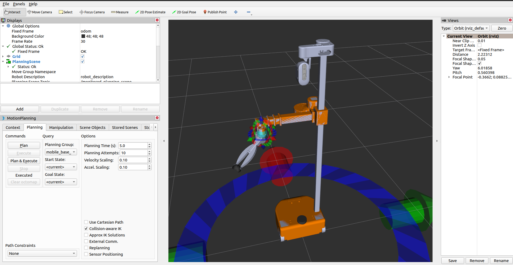

Planning For Differential-Drive Mobile Base and an Arm
This tutorial will show how you can configure a mobile manipulator with a differential drive base so that you can plan coordinated motions for the base and the other degrees of freedom using MoveIt. While you could use MoveIt to plan for just the base, this is not recommended. Use Nav2 for pure navigation. Note that the tutorial uses Hello Robot’s Stretch platform for demonstration purposes, the same approach can be used for any mobile manipulator with a diff-drive base.
{kind=link}
Getting Started
If you haven’t already done so, make sure you’ve completed the steps in Getting Started.
Installation
Install the dependencies:
cd ~/ws_moveit/src
wget https://raw.githubusercontent.com/PickNikRobotics/stretch_ros/ros2/stretch_ros.repos
vcs import < stretch_ros.repos
rosdep install -r --from-paths . --ignore-src --rosdistro rolling -y
Build the colcon workspace:
cd ~/ws_moveit
colcon build --event-handlers desktop_notification- status- --cmake-args -DCMAKE_BUILD_TYPE=Release
Source the colcon workspace:
source ~/ws_moveit/install/setup.bash
Setting up IK solver for mobile-base and arm
To setup the kinematics plugin we need a joint model group that consist of two joint model groups: one for the manipulator and the other one for the mobile base which has only one joint with planar type so the *.srdf file should have:
<group name="manipulator">
...
</group>
<group name="mobile_base">
<joint name="planar_joint" /> <!-- planar_joint must have planar type -->
</group>
<group name="mobile_base_manipulator">
<group name="manipulator" />
<group name="mobile_base" />
</group>
In the kinematics.yaml file the mobile_base_manipulator group need to have stretch_kinematics_plugin/StretchKinematicsPlugin as a kinematics solver
mobile_base_manipulator:
kinematics_solver: stretch_kinematics_plugin/StretchKinematicsPlugin
kinematics_solver_search_resolution: 0.005
kinematics_solver_timeout: 0.1
See stretch_description.srdf and kinematics.yaml for how it’s been set-up for stretch robot.
For the source-code take a look at stretch_kinematics_plugin
Setting up the kinematics model for the base
To be able to generate plan for a differential-drive base we need to set-up two joint properties
motion_model
This’s used to config the planar joint model, it can have two values:
holonomic: The joint can move in any direction, this is the default value if no motion_model joint property is specified
diff_drive: The joint will have differential drive constraint (can’t move side-ways)
<joint_property joint_name="planar_joint_name" property_name="motion_model" value="diff_drive" />
min_translational_distance
If the distance between two states is less than min_translational_distance the motion will be pure rotation, the default value is 1e-5, for more info see computeTurnDriveTurnGeometry for why this’s needed
<joint_property joint_name="planar_joint_name" property_name="min_translational_distance" value="0.01" />
angular_distance_weight
Could be set for both planar joints (diff_drive/holonomic) and floating joints, the default value is 1.0
This is used when calculating the distance between two base poses (x0, y0, theta0) and (x1, y1, theta1) which is defined as the weighted sum of the distance between position and orientation: ||(x0, y0) - (x1, y1)|| + angular_distance_weight * |theta0 - theta1|.
<joint_property joint_name="planar_joint_name" property_name="angular_distance_weight" value="0.5" />
Running the Code
Open a shell and start RViz and wait for everything to finish loading:
ros2 launch stretch_moveit_config demo.launch.py use_fake_controller:=True